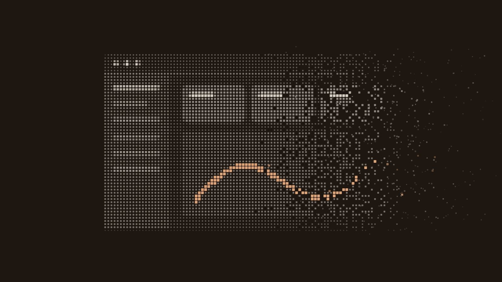

If Anyone Can Build Anything, Who Still Pays for Software?

AI is helping people rebuild big paid software for free, and open models are doing the same to the AI labs. Will SaaS, or AI itself, become worthless? We dig into the evidence.
Ahmed dropped a spicy take in the Lab this week: if AI lets anyone rebuild any app for free, paid software is about to become useless. Fair question in October 2026.
Look at the evidence. In early October, a small team called ArtCraft released free, open-source rebuilds of seven Adobe-style apps that its developer says he made with Claude, Ars Technica reports. Back in August, Genspark open-sourced GenOffice, a free AI office suite. Genspark says the first version took "one engineer, one week, $10,000 in tokens." Neither is finished, but rebuilding software used to take years, and now it's a weekend headline.
So is SaaS cooked? Our take: no, but a big chunk of it is about to get a lot cheaper. Here's why.
What's actually changing: building the first version is getting cheap
"Vibe coding" (describing an app to an AI instead of coding it) was Collins Dictionary's 2025 word of the year. The BBC notes that it lets non-coders build basic apps, but there's "no guarantee the code will actually work or be free of bugs."
The productivity data is messier than the hype:
- In a 2022 GitHub Copilot experiment, developers finished a set coding task (building a small web server) 55.8% faster with AI.
- METR's 2025 trial found the opposite on real work. Experienced open-source developers took 19% longer with early-2025 AI tools, even though they believed AI had sped them up.
- By February 2026, METR said developers were "likely" more sped up than before. But it couldn't measure by how much, partly because many developers refused to work without AI at all.
Our read: AI has made the first version of software dramatically cheaper. It hasn't made the next five years of that software cheap: the maintenance, the security patches, the weird edge cases.
The build-your-own movement is real (with an asterisk)
Klarna famously dropped Salesforce. But its CEO later said the company "did not replace SaaS with an LLM." Instead, it consolidated data from many tools onto its own internal stack. He also said he doubts most companies will do the same, and expects "fewer SaaS" companies to consolidate the market, TechCrunch reported.
Building is easier. Owning what you build is still work.
So what happens to SaaS?
In early 2026, the "SaaSpocalypse" scare hit software stocks. According to Hargreaves Lansdown's analysis of S&P 500 software companies, the average one fell 27% from the end of 2025 to an April low. By October they had won back around 94% of those losses. But the recovery was uneven:
- Cyber security stocks were up 66% for the year.
- Design and creative tools had won back only 32% of their losses.
HL's conclusion: companies whose edge is proprietary data, deep knowledge of how their customers work, or regulatory lock-in are holding up. Those whose edge is "a nice interface, or a task an AI agent could soon do" are under pressure. One analyst quoted by heise (via Reuters) thinks the real test comes in about a year.
In our view, here's how it splits:
- Getting cheaper: single-purpose tools, wrappers around a nice UI, and "feature-as-a-product" apps.
- Sticking around: anything built on data, network effects (where the product gets better as more people use it), trust, distribution, hosting and uptime, support, compliance, and taste.
Impact on companies
- Incumbents: HL flags "seat compression": if AI means companies need fewer employees, they also need fewer per-user licences. It expects pricing to move toward paying for usage or outcomes. Our view: per-user subscriptions for generic tools are the most exposed.
- Startups: Building is cheaper, so there's less money needed to start, but also way more competitors.
- Jobs: Stanford's Digital Economy Lab finds no broad, economy-wide job loss from AI. But employment of 22–25-year-olds in highly AI-exposed jobs is about 19% below where it would be if it had kept pace with their less-exposed peers, mainly because of reduced hiring. The researchers stress this is descriptive, not proof of cause. Our view: junior "write the boilerplate" roles shrink, while judgment, review and product sense matter more.
- Open source: Free code still needs people to maintain it. curl, a tool used across much of the internet, ended its bug-bounty program in January 2026. Its creator said low-quality AI-generated reports had overwhelmed the small team. The free projects that last usually have someone paying: Canva funds a free Affinity by charging for AI and premium features, and Blender runs on donations.
Impact on society
- Access: This is the genuinely exciting part. In the Copilot study, less-experienced developers benefited most. Our view: a small business or a solo builder anywhere can now make tools that used to need a funded team.
- Quality and trust: Veracode tested 100+ AI models and found that 45% of the code samples introduced known security flaws. Newer models weren't more secure.
- Who captures the value: Our view: when the app becomes free, the money moves to whoever sells the AI, the hosting and the data. Both ArtCraft and GenOffice give the app away and charge for AI usage.
- Digital inequality: Also our view: "free software" that needs paid AI credits, fast internet and a strong laptop isn't equally free for everyone. The gap shifts from who can afford a license to who can afford the compute.
Three near-future scenarios (our view)
- The great discount: Generic tools go free or near-free. Paid software survives where it handles your data, your team or your compliance.
- The AI toll booth: Apps are free, but almost every useful feature costs AI credits. You pay the AI provider instead of the software company.
- The hangover: A flood of half-maintained AI clones creates security and reliability problems, and people pay extra for software they can trust.
Our bet: a mix, with #1 and #2 first.
Plot twist: the tool that eats software might get eaten too
The irony: the AI labs powering all this free software face the same threat.
- Open models are closing in. Stanford's 2025 AI Index found that the gap between the best closed model and the best open-weight model (one whose weights anyone can download and run) shrank from 8% to 1.7% on the Chatbot Arena leaderboard in about a year. For January–May 2026, Epoch AI puts the most capable open-weight models about four months behind the closed frontier. That's slightly wider than its earlier three-month estimate, so it's not over.
- The leading open models are mostly Chinese. In September 2026, analyst Nathan Lambert estimated that Chinese open-weight models such as Z.ai's GLM, Moonshot's Kimi, DeepSeek and Alibaba's Qwen sit roughly 2–5 months behind the closed US frontier. He puts US open models, like OpenAI's gpt-oss and Google's Gemma, about 6–9 months behind. He notes that companies like Cursor and Airbnb build on them because they're cheap and flexible.
- Cheaper AI moves markets. Stanford found that the cost of running a model at GPT-3.5 level fell more than 280-fold between November 2022 and October 2024. And when DeepSeek's low-cost model took off in January 2025, Nvidia's shares fell 16.9% in a single day, the BBC reported.
So how do the big labs defend themselves? In our view, they rely on the same moats as the SaaS winners: scale and compute, distribution through products people already use (ChatGPT and Claude Code, not just raw APIs), enterprise trust, and being first to the frontier. Policy matters too. Citi analysts, quoted by the BBC, called US access to advanced chips an advantage, and Lambert describes rising regulatory attention on the strongest models.
If both software and AI get close to free, who wins? Our view: whoever owns the customer relationship, the trusted data, the compute, and the taste to make something people actually love. Intelligence becomes a utility, like electricity. The money is in what you build with it.
What this means for builders like TwinzLab
We build our own apps, so this is personal:
- Features aren't a moat anymore. If AI can copy what an app does in a weekend, the defensible part is taste, trust, community, and doing the boring maintenance well for years.
- Use the free wave. Cheaper tools and AI-assisted building let a two-founder team ship things that used to need a studio.
- Don't marry one model. If AI is turning into a utility, we build so we can switch between models, closed or open, and we're honest with users about what costs money.
- Treat AI-written code as a draft. We review it, test it and secure it before we ship it.
So, Ahmed: paid software isn't becoming useless. But "we built it, so pay us monthly" is no longer a business model on its own, and soon "we trained it, so pay us per token" won't be either. When the code and the intelligence both get cheap, the value moves to standing behind what you make. That's the part we plan to be good at.
Sources
- Ars Technica, "'Software is over': Bold AI developer takes aim at Adobe with open source clones," Oct 7, 2026: https://arstechnica.com/ai/2026/10/software-is-over-bold-ai-developer-takes-aim-at-adobe-with-open-source-clones/
- Genspark, "GenOffice: The First Open-Source AI Office Suite," Aug 3, 2026: https://www.genspark.ai/blog/genoffice-open-source-ai-office
- BBC News, "'Vibe coding' named word of the year by Collins Dictionary," Nov 6, 2025: https://www.bbc.com/news/articles/cpd2y053nleo
- Peng et al., "The Impact of AI on Developer Productivity: Evidence from GitHub Copilot," arXiv, 2023: https://arxiv.org/abs/2302.06590
- METR, "Measuring the Impact of Early-2025 AI on Experienced Open-Source Developer Productivity," Jul 10, 2025: https://metr.org/blog/2025-07-10-early-2025-ai-experienced-os-dev-study/
- METR, "We are Changing our Developer Productivity Experiment Design," Feb 24, 2026: https://metr.org/blog/2026-02-24-uplift-update/
- TechCrunch, "Klarna CEO doubts that other companies will replace Salesforce with AI," Mar 4, 2025: https://techcrunch.com/2025/03/04/klarna-ceo-doubts-that-other-companies-will-replace-salesforce-with-ai/
- Hargreaves Lansdown, "What happened to software stocks after the AI-driven 'SaaSpocalypse'?", Oct 7, 2026: https://www.hl.co.uk/news/what-happened-to-software-stocks-after-the-ai-driven-saaspocalypse
- heise online, "'SaaSpocalypse' cancelled – or postponed?", Oct 7, 2026: https://www.heise.de/en/news/SaaSpocalypse-cancelled-or-postponed-Software-stocks-are-rising-again-11478700.html
- Stanford Digital Economy Lab, "No Widespread Displacement, but the AI Employment Gap for Young Workers Has Widened to 19%," 2026: https://digitaleconomy.stanford.edu/news/canariesaug26/
- Daniel Stenberg, "The end of the curl bug-bounty," Jan 26, 2026: https://daniel.haxx.se/blog/2026/01/26/the-end-of-the-curl-bug-bounty/
- Veracode, "We Asked 100+ AI Models to Write Code. Here's How Many Failed Security Tests," Jul 30, 2025: https://www.veracode.com/blog/genai-code-security-report/
- Stanford HAI, "The 2025 AI Index Report": https://hai.stanford.edu/ai-index/2025-ai-index-report
- Epoch AI, "Open models lag state-of-the-art closed models by 4 months," May 29, 2026: https://epoch.ai/data-insights/open-closed-eci-gap
- Nathan Lambert, "The current balance of power in open models," Interconnects, Sep 21, 2026: https://www.interconnects.ai/p/the-current-balance-of-power-in-open
- BBC News, "Nvidia shares sink as Chinese AI app DeepSeek spooks US markets," Jan 27, 2025: https://www.bbc.co.uk/news/articles/c0qw7z2v1pgo
- Canva, "Why we made Affinity free, and how we'll keep it that way": https://www.canva.com/newsroom/news/affinity-free/
- Blender Development Fund: https://fund.blender.org/